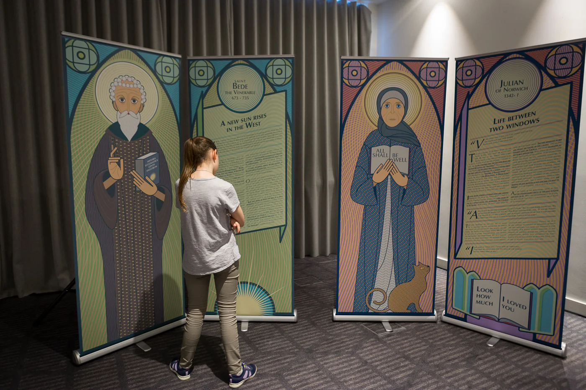
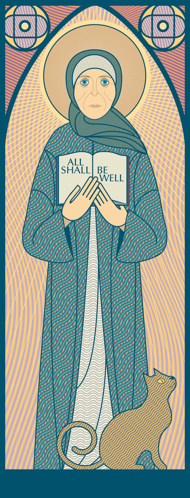
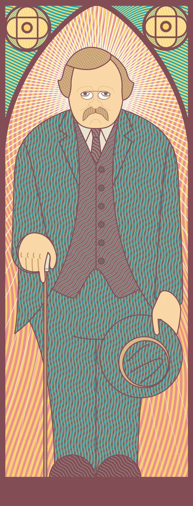
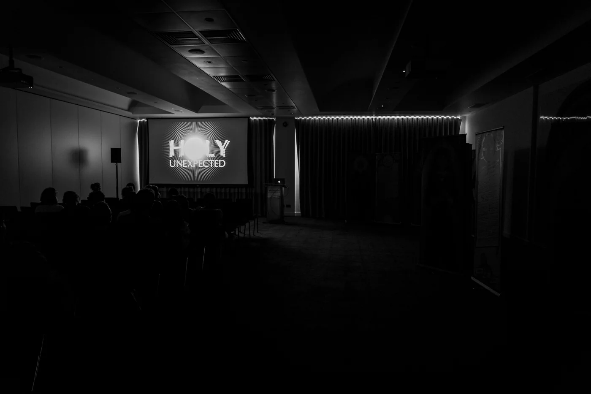

What can a saint’s life tell us now?
Saints can be flattened into distant, finished images. Their actual lives were full of uncertainty, resistance and abrupt changes of direction.
I created and curated Holy Unexpected to bring eight men and women connected with the British Isles into the room as complicated human beings—and to ask what their response to the unforeseen might offer us now.

The encounter
Portrait beside story
Each person appeared twice: first as a full-length figure, then through biography, quotation and symbol.
The arches, halos and jewel-like colours recalled stained glass, but the figures met visitors at human scale on freestanding panels. Read together, portrait and text made each life immediate without pretending it was simple.
Visual design and illustration by Turi Distefano. Photograph © Gabriele Capelli.


Two unlikely guides
A conversation across five centuries
At the centre of the exhibition, a film brought Julian of Norwich and G. K. Chesterton into an imagined dialogue. Their contrasting voices connected the eight lives and turned a sequence of biographies into one question about how people meet the unexpected.
I wrote the complete film script and edited the finished video, alongside writing and editing much of the exhibition text.
Portrait design and illustration by Turi Distefano.

Research made public
Holy Unexpected was developed with a core team, contributors researching individual lives and specialist advisers. I held the project together as creator, curator, principal writer and editor. Turi Distefano translated that shared research into a consistent visual language across the portraits, stories, symbols and timeline.
The exhibition opened at the London Encounter at 155 Bishopsgate on 17 June 2017. It was subsequently presented in Oxford and Cambridge, and its panels, stories and film now continue as a digital exhibition.
“Anything was magnificent as compared with nothing.”— G. K. Chesterton
Meet the unexpected.
Explore the eight lives and the complete exhibition online—or get in touch about presenting the physical work.